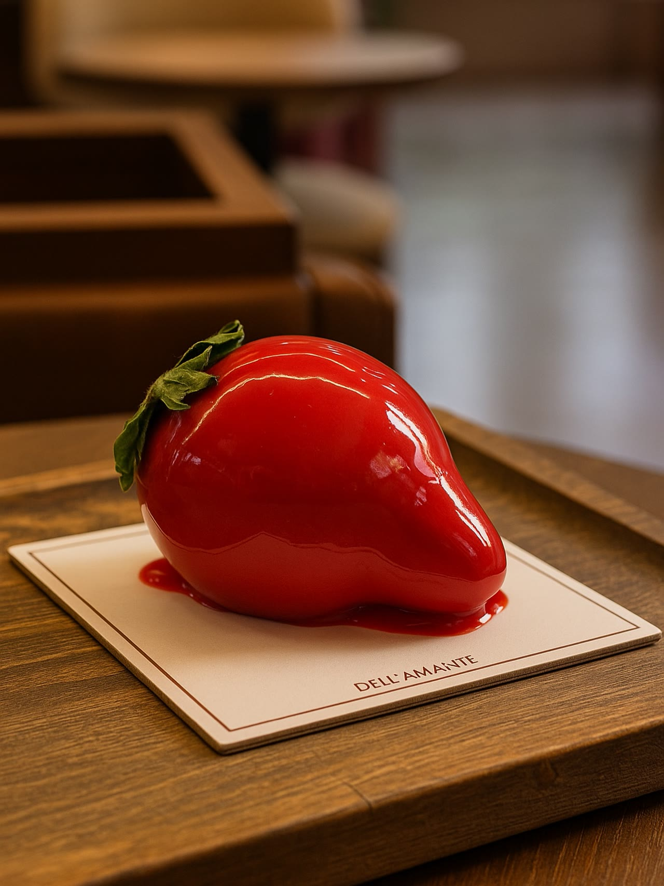
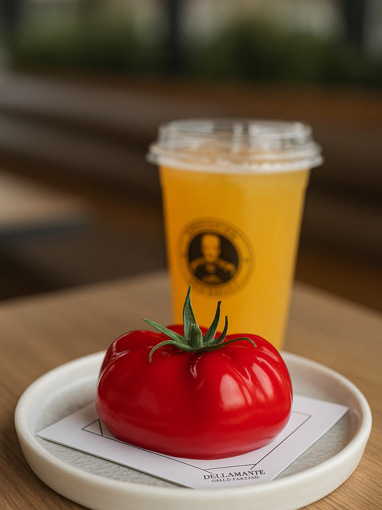
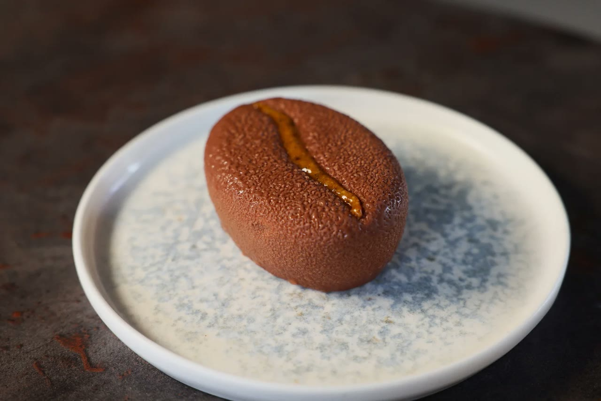
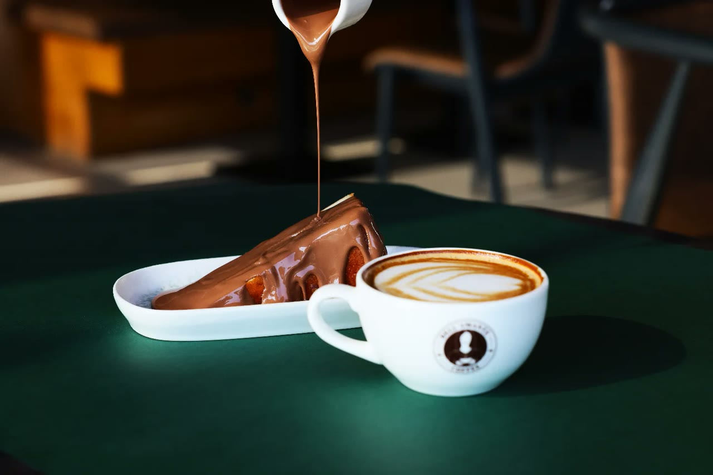
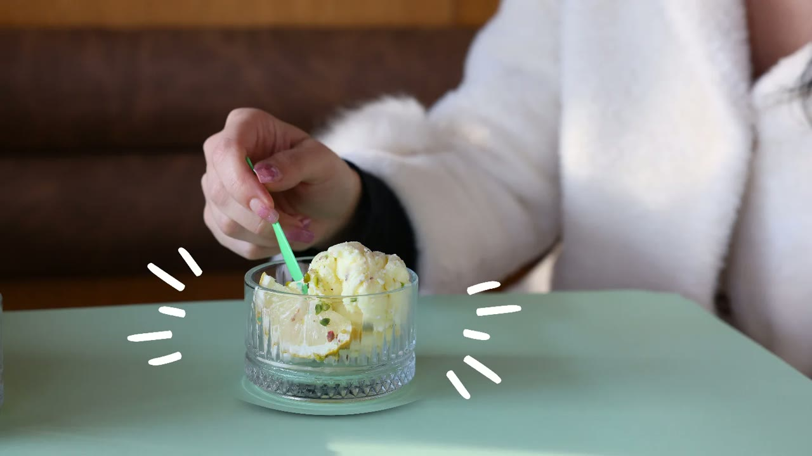
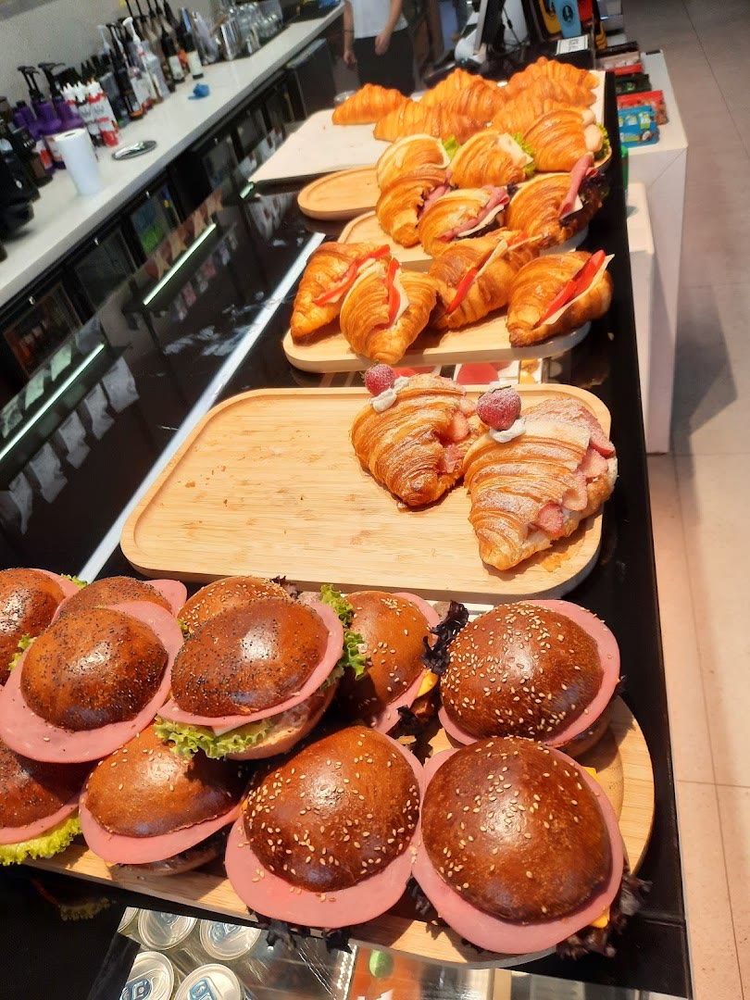
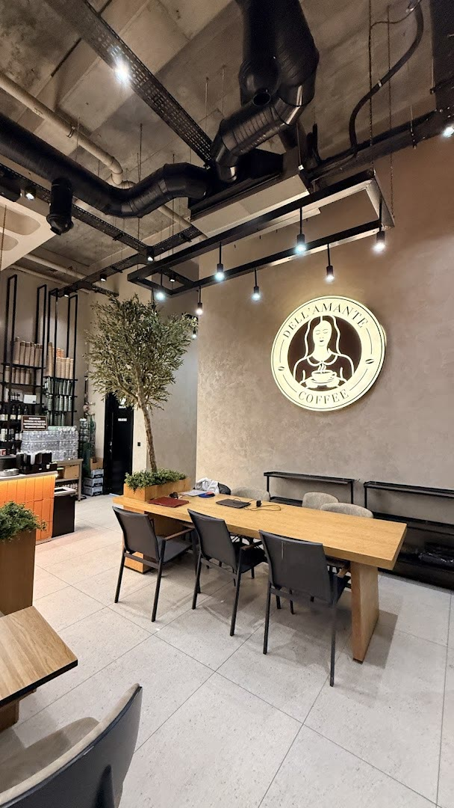
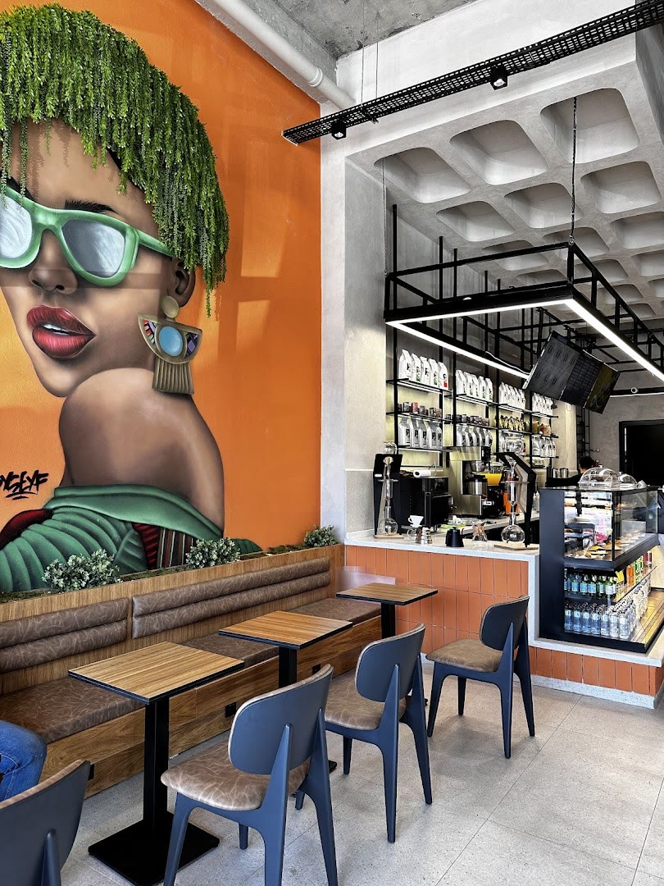
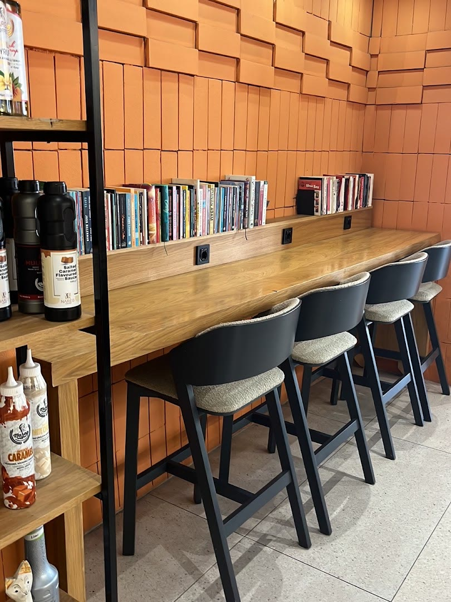
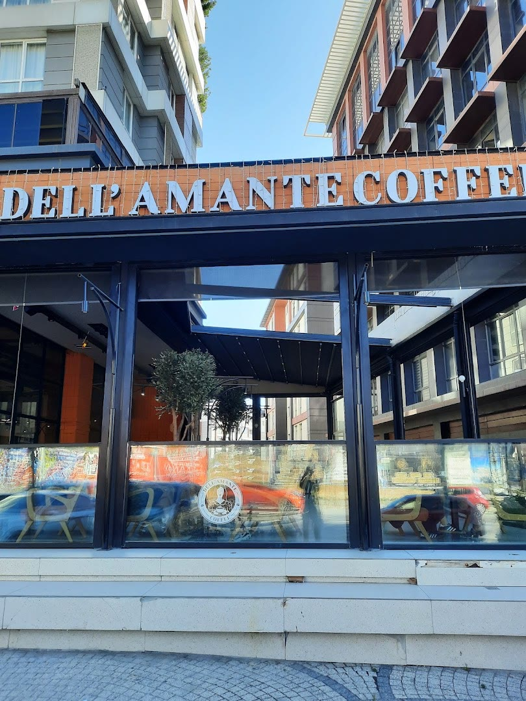

Kruvasanı kahveye batırmanın tam yeri.
Kruvasanlarımız, tatlılarımız ve sandviçlerimiz kendi mutfağımızdan, her gün taze. Alya Residence’ta, sabahtan gece yarısına.
Her gün 07.30–01.00Alya Residence, BeylikdüzüGoogle’da 4,6
Vitrinimizde bu hafta
Hepsi kendi üretimimiz. Meyve görünümlü tatlılarımızı Fransız pastacı Cedric Grolet’nin tarzından ilham alarak yapıyoruz.





Yana kaydırın. Dubai Ball’u da sorun: dışı tel tel çıtır, içi yumuşacık.

Her sabah taze kruvasan
Kahvenin en iyi arkadaşı. Sabah 07.30’da tezgâhta.
- Kruvasan çeşitleriSade ya da dolgulu, günlük taze
- Avokado ve yumurtalıKendi hazırladığımız sandviçlerden
- Kapya biber ve köz patlıcanlıKendi hazırladığımız sandviçlerden
Kahveni al, istediğin kadar otur
Kitaplığın önünde çalışma tezgâhı, uzun masalar ve teras. Dizüstü bilgisayarınla gelmek için de uygun.



TerasÇalışmaya uygunPaket servisAdrese servis
Beylikdüzü’nde en lezzetli ve taze tatlıları yiyebileceğiniz bir kafe. Temizliğe çok dikkat eden bir yönetim.
Barista hanımefendinin önerisiyle Spanish latte denedim ve çok beğendim. Kesinlikle tekrar geleceğim.

Bizi bulun
- Adres
- Alya Residence, Adnan Kahveci Mah. Büyükdere Cad. No: 2/8, Beylikdüzü
- Açık
- Her gün 07.30–01.00
- Telefon
- 0850 305 21 11